很多厨师，也可能绝大部分厨师都按照菜谱做菜。数学家也是如此，在数学上我们称之为算法、规则、步骤或者技巧。有时，我们甚至把它们统称为方法[25]。
如果我们把某个数学定理想象成一道菜，那么证明也是一种方法。证明是以一系列细致的步骤进行解释，你如何从前提得到定理所说的结论。
但是，产生了新事物对数学和烹饪来说都是令人兴奋和激动不已的事。这就是那些高端的实践者们所做的事情。但其实任何人都能做到。你必须行至最前沿，然后开始行动。
听起来像消灾的方法
这是一个专为灾难准备的方法。我强烈建议你试一试。
阻止很多人超越食谱的是他们对将要发生什么一无所知。“这个食谱要求面粉，我真的不知道如果我用洋蓟心罐头代替会怎么样！”
的确如此，而且我也不知道。
但是除非你我进行尝试，否则我们永远不会知道。好厨师在尝试特殊食材的时候常常不知道结果如何。但无论如何他们尝试了，因为他们需要知道结果。要取得进步，你必须进行试验，而且你必须乐于承受失败。
边缘状态下的烹饪
我们先从烹饪说起，因为大部分家庭厨师已经从食谱中走出来了。你可能漏掉一种材料，你可能找不到食谱了。你可能想要用光某些食材。试验是很有趣的！会失败，你会逐渐习惯的。
有个老节目“欢乐烹饪”里有一个可爱的燕麦煎饼食谱。燕麦片做成麦片糊，是一种流行的谷类食品。这种煎饼就是用麦片糊做成的。淀粉也是一种常吃的谷类食品，我喜欢淀粉。有一天，我试着用淀粉代替燕麦。这是一次成功的试验。
奶油薄煎饼
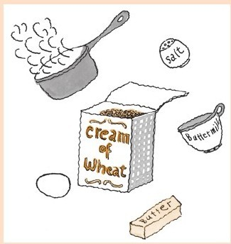
½杯淀粉（也作为麦乳销售）
¼～½茶匙盐
1杯开水
1个鸡蛋
¾杯脱脂乳
½杯多用途面粉
1～2茶匙发酵粉
½茶匙小苏打
黄油
将盐和淀粉混合，倒入开水，用搅拌器大力搅拌，将硬块打散。封好静置，需要静置10分钟。同时你可以完成其他准备工作。
将面粉、发酵粉和小苏打一起过筛。
一开始每次在淀粉中加入一大汤匙脱脂乳，混合均匀（这是为了确保最后成品中没有淀粉块）。打入一个鸡蛋。
倒入面粉混合物略加搅拌（现在可以有硬块）。
将煎锅加热，锅热后用黄油充分润滑，勺子舀出面糊做煎饼，直径大概4英寸。当边缘开始变干的时候，将煎饼翻面，每一面再抹点黄油。翻面后不到一分钟煎饼就熟了。
说明：
·面糊应当是黏液状的，这样可以使煎饼轻薄。
·我没有在面糊中加黄油，我觉得吃的时候黄油在外层，直接与舌头接触感觉更好。
·这个做燕麦煎饼的方法用的是牛奶，没有小苏打。这样味道更好，它可以去掉发酵粉轻微的化学制剂的味道。
够另类吗？可能不够。所以还有另外一个主意：蓝纹奶酪冰激凌。
我不记得自己是怎么想到的。有了这个想法直接就行动了。我侄女永远不会忘记我做蓝纹奶酪冰激凌那一天。她也不会让我忘记的。
我喜欢那味道，但是吃起来有点嗑牙。
最近，我在想着怎么烤布里干酪时，这个主意又来了。
我的想法有点像这样：
烤布里干酪……其实是种甜点……黏的胶状的甜点……在那么黏稠的像酱一样的东西里你尝不出干酪的味道……这是滥用奶酪……谁在管理这个国家？
但是加了布里干酪的甜点可能好吃……布里干酪冰激凌怎么样？……但是冷冻会让味道变淡……你需要一个味更浓的奶酪……啊哈！臭味奶酪冰激凌！
臭味奶酪冰激凌
220克德国蓝色乳酪
1杯牛奶
杯糖
1杯奶油
德国蓝色乳酪是绝配。它比法国卡门贝所产的软质乳酪多点辣味。“臭味”极具冲击力，但是冰激凌其实不臭[26]。
去除乳酪的外皮，放入炖锅，加入牛奶和糖。加热混合物，搅拌直到柔滑。关火。此时此刻你会看到一小串一小串青色的霉菌。这足以震撼食客们，但是如果你不喜欢，用搅拌机进行混合。
现在加入奶油，冷藏，然后用你最喜欢的冰激凌模具进行冷冻。实际上，你可以不用模具进行冷冻。我曾经将混合物倒入一个塑料桶，再放进冰箱。每10～15分钟我会把它拿出来，用搅拌器搅拌。它呈现出漂亮的奶油色，特别是立刻就吃的时候。
这个够另类，但是还有更另类的。它对我来说似乎是处理焦糖汁最好的工具。焦糖汁的问题在于它太甜了。但是如果把它浇到一个难闻的咸味的冰激凌上去呢？
加焦糖汁的臭味奶酪冰激凌
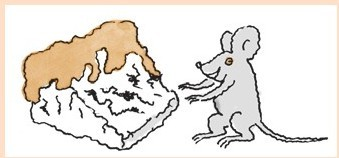
臭味奶酪冰激凌的制作方法同上
1杯糖
2～3汤匙水
¼茶匙柠檬汁
2撮盐
¾杯多脂奶油
做冰激凌。
在炖锅里放上糖、水和柠檬汁。用中火煮沸直到糖变成焦糖。这样就很好，不是太深的棕色。关火。慢慢地加入奶油，一直搅拌。可能需要戴上手套，因为会有飞溅物。加入盐。烹煮2分钟直到酱汁完全柔滑。
在冰激凌上淋一勺酱汁，尽情地吃吧。
边值数学
边值在哪儿？你如何才能算出边值？你要怎么着手？
边值无处不在，近到超乎你的想象。我的朋友汤姆·维纳是教6年级的老师，过去常常介绍他班上的学生去做数学方面的研究，每年都有。他给他们讲了著名数学家埃图瓦勒教授的故事。埃图瓦勒教授设计了一种新的数字书写方式。他没有用数字0、1、2、3、4、5、6、7、8、9，而是用字母A、B、C、D、O来代替。然而，汤姆告诉他的学生，埃图瓦勒在将他的发现公诸于世之前，从船上跌落被章鱼吃掉了。汤姆向他的学生发起挑战，让他们用5个字母A、B、C、D、O设计一个记数方法。
每年，班上的学生都会分成若干小组各自研究，设计出这个方法。他们创造了一种数学运算。大部分记数方法看上去和罗马数字很相似。典型的记数方法可能用A代表1，用B代表10，C代表100，D代表1000，而O代表10000，这样一来他们将357记录为：
CCCBBBBBAAAAAAA
有些小组的想法相当复杂。有些学生偶尔凭空想出一些像五进制的记数方法。
（在这种情况下）边值就是一种记数法。找到了边值就预示着你能够发明一套自己的、代表数字的系统。放开思绪，推敲概念、做思想实验开始进攻。没有人会因为你的行动而受到妨害。你会失去的只有时间。
你的发明可能一无是处，甚至可能惹人讨厌。但是它会成为你自己私人专属的记数系统。你也一定会因为尝试而学到一些东西，而你的系统可能会很高雅，富有魅力。
我几年前就在玩二元数字系统，并且我想到了一个合理的变形。
对那些不熟悉的人来说，二元数字系统就像我们平常以10为单位的记数方法，只是被拆开了。在我们常用的方法中，我们会有个位数列、十位数列、百位数列，以此类推。
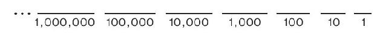
也就是
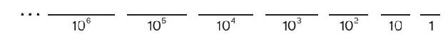
而我们使用的是0、1、2、3、4、5、6、7、8、9这些数字。例如，我们记录537时
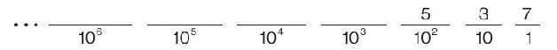
我们的意思是5个102，3个10，7个1。
在二元数字系统，或者二进制中，我们以2为单位代替10。
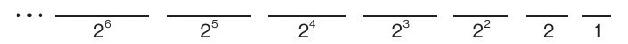
也就是
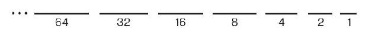
并且，我们只用2个数字，0和1。如果我们要记录
1101
在二进制中表示为
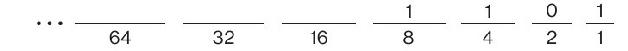
换句话说，数字8+4+1=13
我们只用了0和1，这样每一个数字只有一种书写方式。如果我们以2为单位，这样2既可以作为2也可以作为10书写。
令人惊奇的是，只用0和1就可以代表所有自然数。例如，要表示43，你会想：
我不需要64列，我可以用32这列。
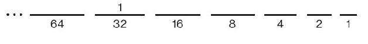
如果我用32，那么恰好需要43-32=11。而对于11，我不需要16，但是我可以用8。
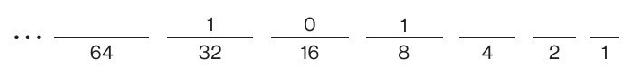
现在我需要11-8=3，我可以用1个2和1个1获得。
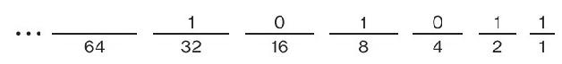
我们就是这样用二进制表示43的
101011
现在，我想知道的是：你必须用0和1吗？你能用，比如说，1和2吗？
我试过了，可以用。例如，如何表示8：
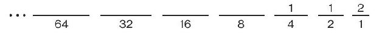
这个是如何表示43：
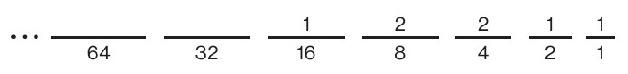
还有如何表示前12个数字：
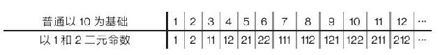
但是有一个数字你无法表示出来，这个数字是零。
这很有趣。我尝试了其他组合，1和3、2和3、0和2等，但是都存在问题。1和3这一组合只能表示奇数，0和2这个组合只能表示偶数。用2和3则存在一些缺口，你无法表达出1。你可以表示出2和3，但会漏掉4和5。你可以表示出6、7、8和9，但是接下来你会漏掉10、11、12和13。
当我思考三元（三进制）的时候，我正打算放弃，三进制用这些数列：
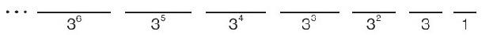
也就是
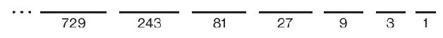
三进制记数方法通常用0、1和2，但是我发现用1、2和3也可以——除了不能表示出零。
别的还有0、1、和-1。这个方法被称为“平衡三进制”（也称对称三进制）。不仅可以用来记录0、1、2、3、4……还可以记录所有负数，这个方法非常酷。
还有其他组合吗？我尝试了几个。有一个可以，尽管一开始这个组合并不被看好：-1、1和3。我称之为“不对称三进制”。为简单起见，1代表-1。这样如何记录1就显而易见了：
1
那2呢？像这样：
11，
加上1个3再减去一个1等于2，这样3和4就容易了：
3和11
但是5曾把我难住，直到我发现：
11，
如此一来，你可以这样记录前12个数字：
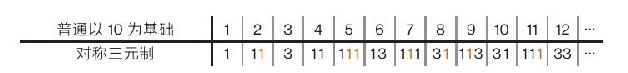
你能得出0。
13
而且还能得出负数。我会让你这样填[27]：
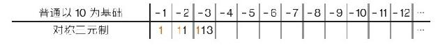
正如我之前提及的，有时汤姆的学生们会创造出类似五进制的记数方法。五进制有这些数列：
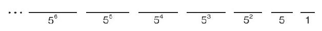
使用的数字是0、1、2、3、4。汤姆的学生可能用类似A代表1、B代表2、C代表3、D代表4、O代表0，这样一来，例如
BDC
以此为例，应是2×52+4×5+3=50+20+3=73。
我想知道哪5个数字组合在一起可以以这些数列为基础进行记数？我相当确定1、2、3、4、5可以，但是还有别的吗？
只有一种方法能知道答案！
“边值”听起来吓人（总之在数学里是这样），但是你不必看得很远去寻找它。而且它很安全。六年级的学生可以与它做游戏，并且没有人受到伤害。